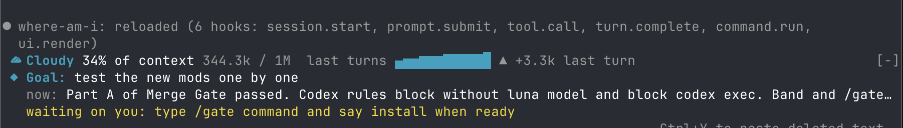

where-am-i
A live recap above the prompt: goal, doing now, waiting on you, next.

Install
claude plugin marketplace add hamzafer/claude-code-mods
claude plugin install where-am-i@claude-code-modsRestart Claude Code after installing. To try it without installing, clone the repo and run claude --plugin-dir mods/where-am-i.
How to use
/where- A few bullets instead of one line
How it behaves
- Makes one Haiku call after each turn to write the summary.
- next-steps hides where-am-i's own next part while its list shows, and restores it when the list clears.